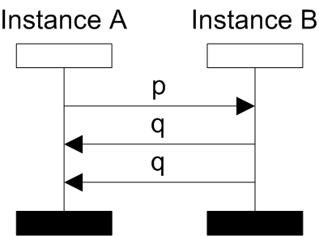
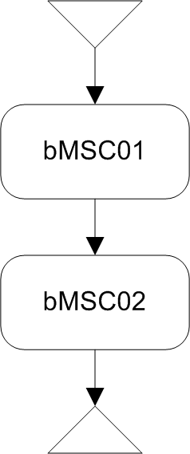
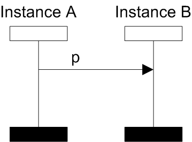
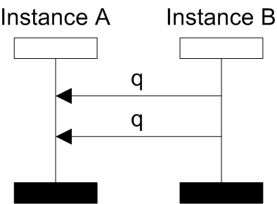
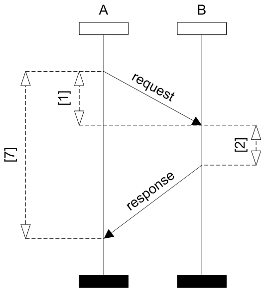
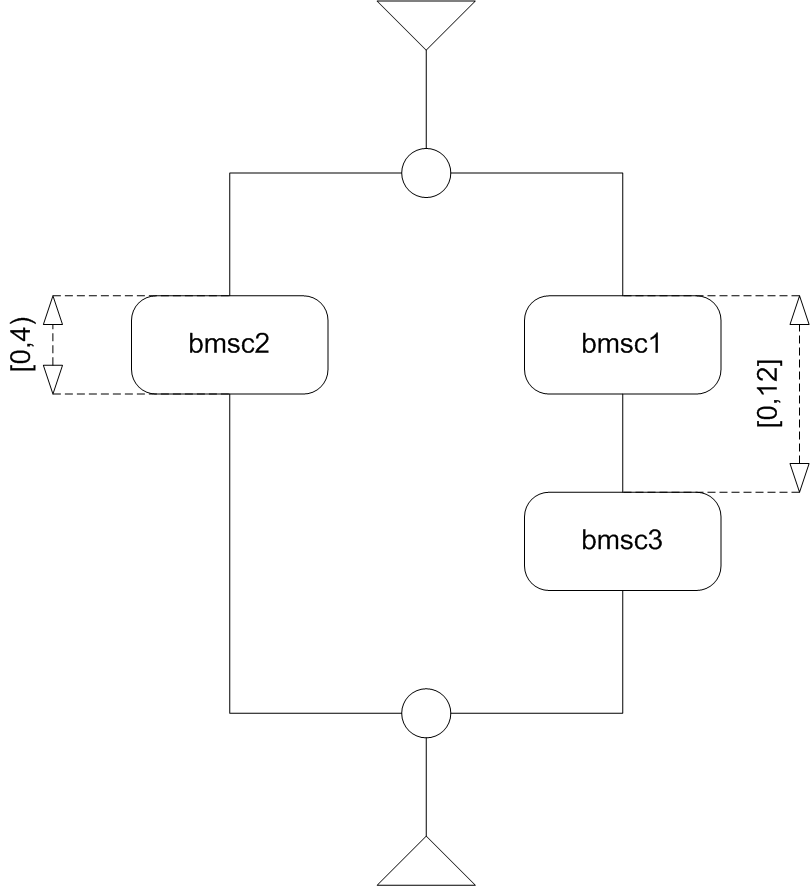
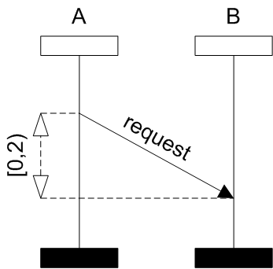
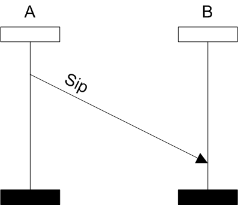
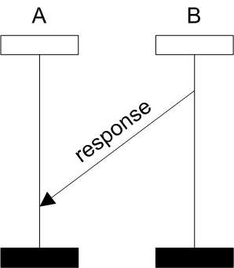
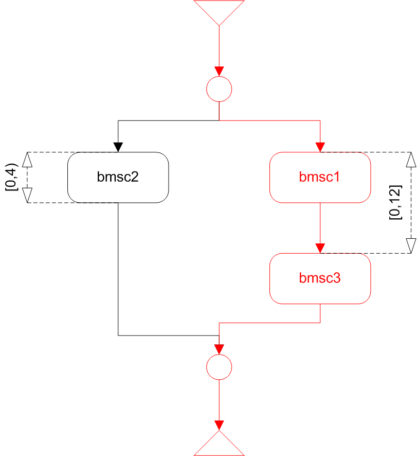

Find Flow Algorithm
The find flow problem is deciding whether given flow (BMSC) is contained in a
given specificaiton (BMSC or HMSC with nesting level 1, means each node represents BMSC).
The algorithm is able to check both untimed and timed cases of MSCs.
Example 1:
-
- 
- BMSC flow
-
- 
- HMSC specification
-
- 
- BMSC BMSC01
-
- 
- BMSC BMSC02
In the figure above we have specified an input to the find flow algorithm.
Every path from the initial node to the terminal node in a HMSC describes
a scenario, which could be represented by a BMSC.
In this case, there is only one path in the HMSC specification. The BMSC
specified by the path is formed from nodes (BMSCs) on the path which are
sequentialy composed (putting the BMSCs one after the other and gluing
the matching process lines). It is easy to see that the BMSC flow
is exactly the same BMSC represented by the path in the HMSC specification.
The result of procedure solving the find flow problem should
be every successful path i.e. HMSC specification.
More formal specification of the procedure:
Input:
-
BMSC (could contain timing assignment)
-
MSC (could contain both HMSC and BMSC time constraints)
Output:
-
yes - the BMSC flow describes one of the MSC specification scenarious. In case the specification is defined by HMSC (nesting level 1) the algorithm shows the path which describes the same scenario as the BMSC flow.
-
no - the BMSC flow does not describe any of the MSC specification scenarious
Time constraints representation
Time constraints in BMSC flow is representing by time intervals which describe concrete time (one value). In the MSC specification, there is allowed to use time intervals which contain more time values.
Example 2:
-
- 
- BMSC flow
-
- 
- HMSC specification
-
- 
- BMSC bmsc1
-
- 
- BMSC bmsc2
-
- 
- BMSC bmsc3
-
- 
- Result HMSC
In the result, the find flow algorithm colored the path in specification which was met by the BMSC flow.